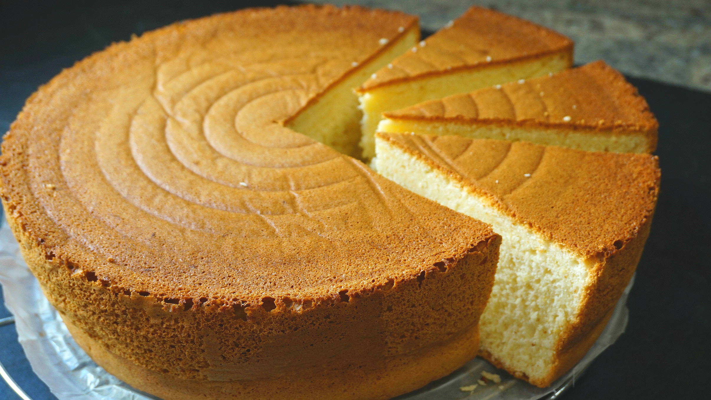

El bizcocho casero es uno de los clásicos de las madres y de las abuelas.
Todas las receta de bizcocho que existen en el mundo son iguales pero diferentes, cada madre le da su toque diferenciador. Hoy os traigo un receta genial de bizcocho de limón.
| Harina | Huevos |
| Azúcar | Chocolate |
| Molde | Lamedor |
| Horno | Dos manos |
Bootstrap is the most popular HTML, CSS, and JS framework for developing responsive, mobile-first projects on the web.
This is some text.
This is another text.